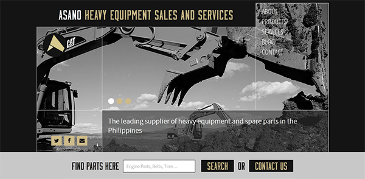
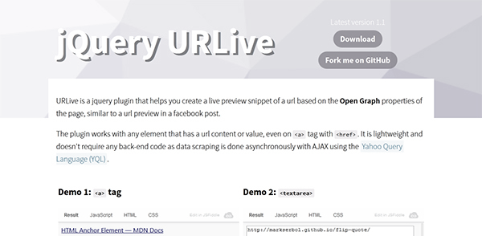
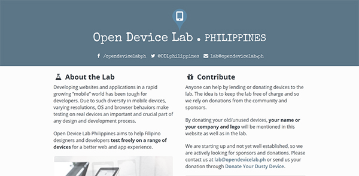
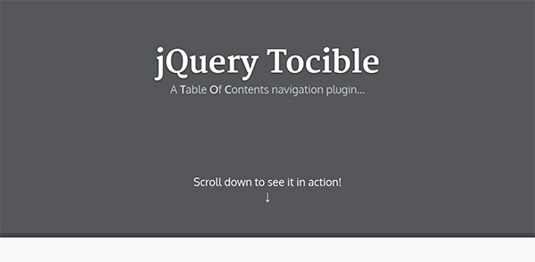
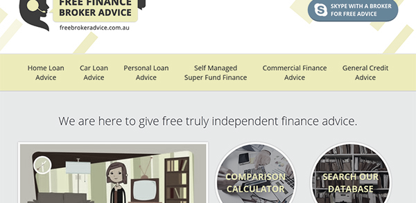

Projects






I am Mark Serbol, a front-end developer and architect based in Iloilo City, Philippines. I help companies all over the world build well crafted front-end experiences with strong focus on maintainability and performance.
I am a problem solver and very passionate when it comes to my work. I carry out my tasks diligently to any given timeframe and budget. I'm constantly perfecting my craft, and producing work that I can be proud of. I'm hands-on, creative and goal-oriented. If you think you have something we can work together on then get in touch.